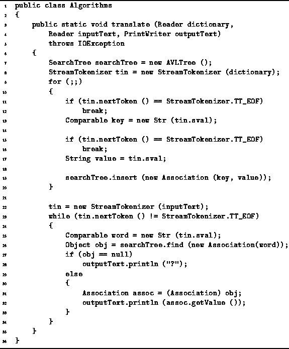

Data Structures and Algorithms
with Object-Oriented Design Patterns in Java
Data Structures and Algorithms
with Object-Oriented Design Patterns in JavaThere are many applications for search trees. The principal characteristic of such applications is that a database of keyed information needs to be frequently accessed and the access pattern is either unknown or known to be random. For example, dictionaries are often implemented using search trees. A dictionary is essentially a container that contains ordered key/value pairs. The keys are words is a source language and, depending on the application, the values may be the definitions of the words or the translation of the word in a target language.
This section presents a simple application of search trees. Suppose we are required to translate the words in an input file one-by-one from some source language to another target language. In this example, the translation is done one word at a time. That is, no natural language syntactic or semantic processing is done.
In order to implement the translator we assume that there exists a text file, which contains pairs of words. The first element of the pair is a word in the source language and the second element is a word in the target language. To translate a text, we first read the words and the associated translations and build a search tree. The translation is created one word at a time by looking up each word in the text.
Program  gives an implementation of the translator.
The translate method uses a search tree to hold the pairs of words.
In this case, an AVL tree is used.
However, this implementation works with all the search tree types
described in this chapter
(e.g., BinarySearchTree, AVLTree,
MWayTree, and BTree).
gives an implementation of the translator.
The translate method uses a search tree to hold the pairs of words.
In this case, an AVL tree is used.
However, this implementation works with all the search tree types
described in this chapter
(e.g., BinarySearchTree, AVLTree,
MWayTree, and BTree).

Program: Application of search trees--word translation.
The translate method reads pairs of strings
from the input stream (lines 11-17).
The Association class defined in Section
is used to contain the key/value pairs.
A new instance is created for each key/value pair
which is then inserted into the search tree (line 19).
The process of building the search tree terminates
when the end-of-file is encountered.
During the translation phase, the translate method reads words one at a time from the input stream and writes the translation of each word on the output stream. Each word is looked up as it is read (lines 25-26). If no key matches the given word, the word is printed followed by a question mark (lines 27-28). Otherwise, the value associated with the matching key is printed (lines 31-32).
 Copyright © 1998 by Bruno R. Preiss, P.Eng. All rights reserved.
Copyright © 1998 by Bruno R. Preiss, P.Eng. All rights reserved.